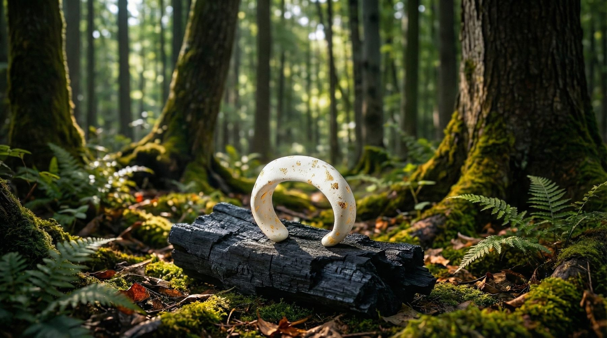
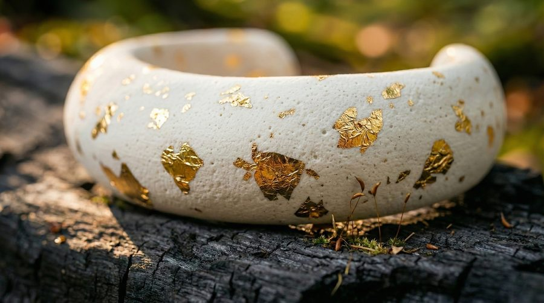
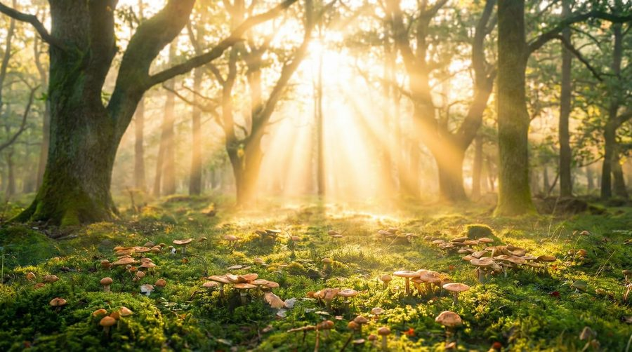
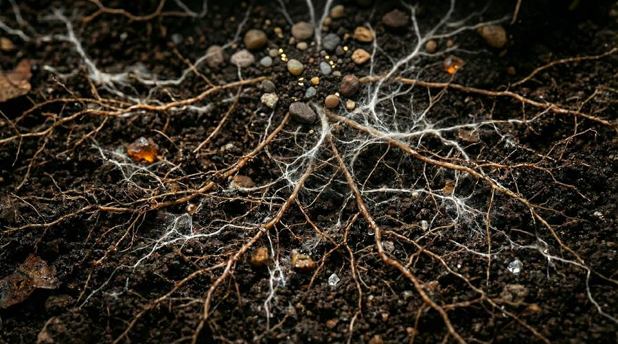
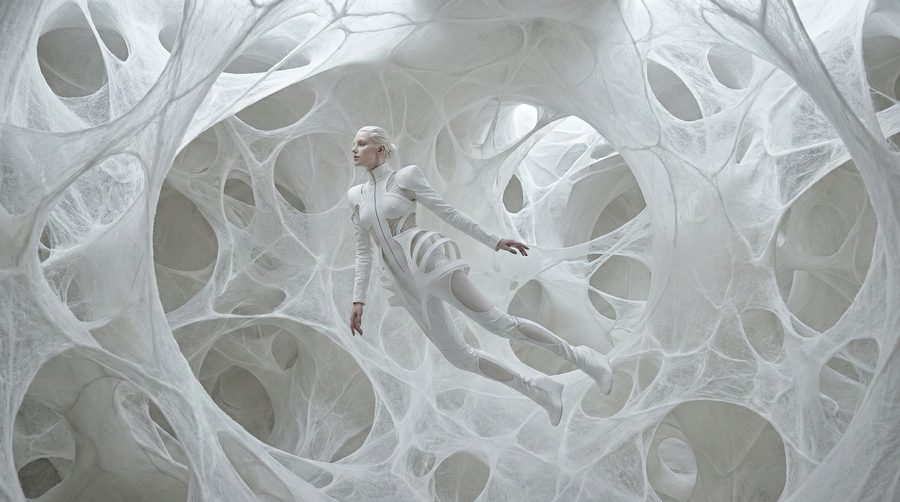

05 · Fall 2025 · Magical Forests + Sound Design
The Inner White
A sustainable fashion jewellery project. At its centre is a wrist cuff made from mycelium, the root network of fungi, shaped with 3D printing and moulding so its wearer can speak up for eco-fashion. A one-minute campaign film takes the viewer from a forest floor into the cuff's white inner world and back out: "Grown from earth, worn by future."
- Role
- Solo project: concept, art direction, AI image and video generation, editing and sound design
- Context
- Magical Forests and Sound Design courses, Parsons School of Design, Fall 2025
- Medium
- Mycelium wrist cuff (3D printing and moulding); one-minute campaign film
- Links
- Film on YouTube
Tools: Adobe Premiere Pro for the edit, Pro Tools for the sound. AI help: Google Gemini generated the key frames and Google Veo 3.1 animated them, from my prompts. Every image on this page is from the film and AI-generated.
References: the cuff's form is inspired by Elsa Peretti's jewellery for Tiffany & Co. The soundtrack mixes clips from "Toxic" (Britney Spears), "The Chase" (Hearts2Hearts) and Rachmaninoff's Piano Concerto No. 2 (Daniil Trifonov's recording).

Organic futurism
The project joins two courses. Magical Forests looked at soil, fungi and minerals as materials; Sound Design gave the project its film and soundtrack. The cuff carries the material idea: jewellery grown from fungi, worn on the wrist where people see it. The film carries the story, in a look I called "Organic Futurism": natural textures, a white, cell-like architecture and warm gold light.


From the forest floor to the white soul
The film is one continuous journey. It starts on a sunlit forest floor, dives through soil and roots into a glowing mycelium network, then enters the cuff's inner world, a white structure where a figure dances and floats. It ends back in the forest, with the cuff on a charred log. I generated the key frames in Gemini, animated them with Veo 3.1, cut the film in Premiere Pro and mixed the soundtrack in Pro Tools.




